영웅 소환 확률 정보
계산 방식: 등급이 결정된 뒤, 해당 등급 안의 아이템 중 1개가 균등 확률로 선택됩니다.
요약
레벨 1
C (커먼)70%
R (레어)22%
E (에픽)7%
L (레전더리)1%
레벨 2
C (커먼)68%
R (레어)22.8%
E (에픽)8%
L (레전더리)1.2%
레벨 3
C (커먼)65.7%
R (레어)23.5%
E (에픽)9%
L (레전더리)1.8%
레벨 4
C (커먼)63.4%
R (레어)24%
E (에픽)10%
L (레전더리)2.6%
레벨 5
C (커먼)62.2%
R (레어)24%
E (에픽)10%
L (레전더리)3.8%
레벨 6
C (커먼)59.8%
R (레어)24%
E (에픽)11%
L (레전더리)5.2%
레벨 7
C (커먼)58.2%
R (레어)23.5%
E (에픽)11.5%
L (레전더리)6.8%
레벨 8
C (커먼)56.3%
R (레어)23.5%
E (에픽)12%
L (레전더리)8.2%
레벨 9
C (커먼)55.8%
R (레어)23%
E (에픽)12%
L (레전더리)9.2%
레벨 10
C (커먼)53%
R (레어)24%
E (에픽)13%
L (레전더리)10%
세부 확률
레벨 1 - 필요 누적 소환 횟수 0
C (커먼): 70% / 7 / 10%
| 아이템 | 아이템별 확률 |
|---|---|
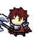 브락 | 10% |
| 토렌 | 10% |
| 닉스 | 10% |
| 노엘 | 10% |
| 가론 | 10% |
| 파이크 | 10% |
| 루크 | 10% |
R (레어): 22% / 11 / 2%
| 아이템 | 아이템별 확률 |
|---|---|
| 브롬 | 2% |
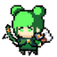 펜 | 2% |
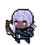 리라 | 2% |
| 실비 | 2% |
| 키로 | 2% |
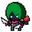 세이블 | 2% |
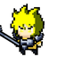 로난 | 2% |
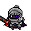 베어드 | 2% |
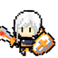 듀릭 | 2% |
| 엘리오 | 2% |
| 탈리아 | 2% |
E (에픽): 7% / 10 / 0.7%
| 아이템 | 아이템별 확률 |
|---|---|
| 더건 | 0.7% |
| 카엘 | 0.7% |
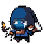 세리스 | 0.7% |
| 레이븐 | 0.7% |
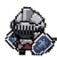 바스티온 | 0.7% |
| 레오니스 | 0.7% |
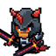 드레이븐 | 0.7% |
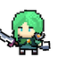 발렌 | 0.7% |
| 에이린 | 0.7% |
| 셀린 | 0.7% |
L (레전더리): 1% / 5 / 0.2%
| 아이템 | 아이템별 확률 |
|---|---|
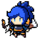 오리온 | 0.2% |
| 쉐이드 | 0.2% |
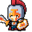 이지스 | 0.2% |
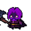 솔라라 | 0.2% |
| 제프라 | 0.2% |
레벨 2 - 필요 누적 소환 횟수 20
C (커먼): 68% / 7 / 9.7143%
| 아이템 | 아이템별 확률 |
|---|---|
| 브락 | 9.7143% |
| 토렌 | 9.7143% |
| 닉스 | 9.7143% |
| 노엘 | 9.7143% |
| 가론 | 9.7143% |
| 파이크 | 9.7143% |
| 루크 | 9.7143% |
R (레어): 22.8% / 11 / 2.0727%
| 아이템 | 아이템별 확률 |
|---|---|
| 브롬 | 2.0727% |
| 펜 | 2.0727% |
| 리라 | 2.0727% |
| 실비 | 2.0727% |
| 키로 | 2.0727% |
| 세이블 | 2.0727% |
| 로난 | 2.0727% |
| 베어드 | 2.0727% |
| 듀릭 | 2.0727% |
| 엘리오 | 2.0727% |
| 탈리아 | 2.0727% |
E (에픽): 8% / 10 / 0.8%
| 아이템 | 아이템별 확률 |
|---|---|
| 더건 | 0.8% |
| 카엘 | 0.8% |
| 세리스 | 0.8% |
| 레이븐 | 0.8% |
| 바스티온 | 0.8% |
| 레오니스 | 0.8% |
| 드레이븐 | 0.8% |
| 발렌 | 0.8% |
| 에이린 | 0.8% |
| 셀린 | 0.8% |
L (레전더리): 1.2% / 5 / 0.24%
| 아이템 | 아이템별 확률 |
|---|---|
| 오리온 | 0.24% |
| 쉐이드 | 0.24% |
| 이지스 | 0.24% |
| 솔라라 | 0.24% |
| 제프라 | 0.24% |
레벨 3 - 필요 누적 소환 횟수 50
C (커먼): 65.7% / 7 / 9.3857%
| 아이템 | 아이템별 확률 |
|---|---|
| 브락 | 9.3857% |
| 토렌 | 9.3857% |
| 닉스 | 9.3857% |
| 노엘 | 9.3857% |
| 가론 | 9.3857% |
| 파이크 | 9.3857% |
| 루크 | 9.3857% |
R (레어): 23.5% / 11 / 2.1364%
| 아이템 | 아이템별 확률 |
|---|---|
| 브롬 | 2.1364% |
| 펜 | 2.1364% |
| 리라 | 2.1364% |
| 실비 | 2.1364% |
| 키로 | 2.1364% |
| 세이블 | 2.1364% |
| 로난 | 2.1364% |
| 베어드 | 2.1364% |
| 듀릭 | 2.1364% |
| 엘리오 | 2.1364% |
| 탈리아 | 2.1364% |
E (에픽): 9% / 10 / 0.9%
| 아이템 | 아이템별 확률 |
|---|---|
| 더건 | 0.9% |
| 카엘 | 0.9% |
| 세리스 | 0.9% |
| 레이븐 | 0.9% |
| 바스티온 | 0.9% |
| 레오니스 | 0.9% |
| 드레이븐 | 0.9% |
| 발렌 | 0.9% |
| 에이린 | 0.9% |
| 셀린 | 0.9% |
L (레전더리): 1.8% / 5 / 0.36%
| 아이템 | 아이템별 확률 |
|---|---|
| 오리온 | 0.36% |
| 쉐이드 | 0.36% |
| 이지스 | 0.36% |
| 솔라라 | 0.36% |
| 제프라 | 0.36% |
레벨 4 - 필요 누적 소환 횟수 90
C (커먼): 63.4% / 7 / 9.0571%
| 아이템 | 아이템별 확률 |
|---|---|
| 브락 | 9.0571% |
| 토렌 | 9.0571% |
| 닉스 | 9.0571% |
| 노엘 | 9.0571% |
| 가론 | 9.0571% |
| 파이크 | 9.0571% |
| 루크 | 9.0571% |
R (레어): 24% / 11 / 2.1818%
| 아이템 | 아이템별 확률 |
|---|---|
| 브롬 | 2.1818% |
| 펜 | 2.1818% |
| 리라 | 2.1818% |
| 실비 | 2.1818% |
| 키로 | 2.1818% |
| 세이블 | 2.1818% |
| 로난 | 2.1818% |
| 베어드 | 2.1818% |
| 듀릭 | 2.1818% |
| 엘리오 | 2.1818% |
| 탈리아 | 2.1818% |
E (에픽): 10% / 10 / 1%
| 아이템 | 아이템별 확률 |
|---|---|
| 더건 | 1% |
| 카엘 | 1% |
| 세리스 | 1% |
| 레이븐 | 1% |
| 바스티온 | 1% |
| 레오니스 | 1% |
| 드레이븐 | 1% |
| 발렌 | 1% |
| 에이린 | 1% |
| 셀린 | 1% |
L (레전더리): 2.6% / 5 / 0.52%
| 아이템 | 아이템별 확률 |
|---|---|
| 오리온 | 0.52% |
| 쉐이드 | 0.52% |
| 이지스 | 0.52% |
| 솔라라 | 0.52% |
| 제프라 | 0.52% |
레벨 5 - 필요 누적 소환 횟수 140
C (커먼): 62.2% / 7 / 8.8857%
| 아이템 | 아이템별 확률 |
|---|---|
| 브락 | 8.8857% |
| 토렌 | 8.8857% |
| 닉스 | 8.8857% |
| 노엘 | 8.8857% |
| 가론 | 8.8857% |
| 파이크 | 8.8857% |
| 루크 | 8.8857% |
R (레어): 24% / 11 / 2.1818%
| 아이템 | 아이템별 확률 |
|---|---|
| 브롬 | 2.1818% |
| 펜 | 2.1818% |
| 리라 | 2.1818% |
| 실비 | 2.1818% |
| 키로 | 2.1818% |
| 세이블 | 2.1818% |
| 로난 | 2.1818% |
| 베어드 | 2.1818% |
| 듀릭 | 2.1818% |
| 엘리오 | 2.1818% |
| 탈리아 | 2.1818% |
E (에픽): 10% / 10 / 1%
| 아이템 | 아이템별 확률 |
|---|---|
| 더건 | 1% |
| 카엘 | 1% |
| 세리스 | 1% |
| 레이븐 | 1% |
| 바스티온 | 1% |
| 레오니스 | 1% |
| 드레이븐 | 1% |
| 발렌 | 1% |
| 에이린 | 1% |
| 셀린 | 1% |
L (레전더리): 3.8% / 5 / 0.76%
| 아이템 | 아이템별 확률 |
|---|---|
| 오리온 | 0.76% |
| 쉐이드 | 0.76% |
| 이지스 | 0.76% |
| 솔라라 | 0.76% |
| 제프라 | 0.76% |
레벨 6 - 필요 누적 소환 횟수 200
C (커먼): 59.8% / 7 / 8.5429%
| 아이템 | 아이템별 확률 |
|---|---|
| 브락 | 8.5429% |
| 토렌 | 8.5429% |
| 닉스 | 8.5429% |
| 노엘 | 8.5429% |
| 가론 | 8.5429% |
| 파이크 | 8.5429% |
| 루크 | 8.5429% |
R (레어): 24% / 11 / 2.1818%
| 아이템 | 아이템별 확률 |
|---|---|
| 브롬 | 2.1818% |
| 펜 | 2.1818% |
| 리라 | 2.1818% |
| 실비 | 2.1818% |
| 키로 | 2.1818% |
| 세이블 | 2.1818% |
| 로난 | 2.1818% |
| 베어드 | 2.1818% |
| 듀릭 | 2.1818% |
| 엘리오 | 2.1818% |
| 탈리아 | 2.1818% |
E (에픽): 11% / 10 / 1.1%
| 아이템 | 아이템별 확률 |
|---|---|
| 더건 | 1.1% |
| 카엘 | 1.1% |
| 세리스 | 1.1% |
| 레이븐 | 1.1% |
| 바스티온 | 1.1% |
| 레오니스 | 1.1% |
| 드레이븐 | 1.1% |
| 발렌 | 1.1% |
| 에이린 | 1.1% |
| 셀린 | 1.1% |
L (레전더리): 5.2% / 5 / 1.04%
| 아이템 | 아이템별 확률 |
|---|---|
| 오리온 | 1.04% |
| 쉐이드 | 1.04% |
| 이지스 | 1.04% |
| 솔라라 | 1.04% |
| 제프라 | 1.04% |
레벨 7 - 필요 누적 소환 횟수 270
C (커먼): 58.2% / 7 / 8.3143%
| 아이템 | 아이템별 확률 |
|---|---|
| 브락 | 8.3143% |
| 토렌 | 8.3143% |
| 닉스 | 8.3143% |
| 노엘 | 8.3143% |
| 가론 | 8.3143% |
| 파이크 | 8.3143% |
| 루크 | 8.3143% |
R (레어): 23.5% / 11 / 2.1364%
| 아이템 | 아이템별 확률 |
|---|---|
| 브롬 | 2.1364% |
| 펜 | 2.1364% |
| 리라 | 2.1364% |
| 실비 | 2.1364% |
| 키로 | 2.1364% |
| 세이블 | 2.1364% |
| 로난 | 2.1364% |
| 베어드 | 2.1364% |
| 듀릭 | 2.1364% |
| 엘리오 | 2.1364% |
| 탈리아 | 2.1364% |
E (에픽): 11.5% / 10 / 1.15%
| 아이템 | 아이템별 확률 |
|---|---|
| 더건 | 1.15% |
| 카엘 | 1.15% |
| 세리스 | 1.15% |
| 레이븐 | 1.15% |
| 바스티온 | 1.15% |
| 레오니스 | 1.15% |
| 드레이븐 | 1.15% |
| 발렌 | 1.15% |
| 에이린 | 1.15% |
| 셀린 | 1.15% |
L (레전더리): 6.8% / 5 / 1.36%
| 아이템 | 아이템별 확률 |
|---|---|
| 오리온 | 1.36% |
| 쉐이드 | 1.36% |
| 이지스 | 1.36% |
| 솔라라 | 1.36% |
| 제프라 | 1.36% |
레벨 8 - 필요 누적 소환 횟수 350
C (커먼): 56.3% / 7 / 8.0429%
| 아이템 | 아이템별 확률 |
|---|---|
| 브락 | 8.0429% |
| 토렌 | 8.0429% |
| 닉스 | 8.0429% |
| 노엘 | 8.0429% |
| 가론 | 8.0429% |
| 파이크 | 8.0429% |
| 루크 | 8.0429% |
R (레어): 23.5% / 11 / 2.1364%
| 아이템 | 아이템별 확률 |
|---|---|
| 브롬 | 2.1364% |
| 펜 | 2.1364% |
| 리라 | 2.1364% |
| 실비 | 2.1364% |
| 키로 | 2.1364% |
| 세이블 | 2.1364% |
| 로난 | 2.1364% |
| 베어드 | 2.1364% |
| 듀릭 | 2.1364% |
| 엘리오 | 2.1364% |
| 탈리아 | 2.1364% |
E (에픽): 12% / 10 / 1.2%
| 아이템 | 아이템별 확률 |
|---|---|
| 더건 | 1.2% |
| 카엘 | 1.2% |
| 세리스 | 1.2% |
| 레이븐 | 1.2% |
| 바스티온 | 1.2% |
| 레오니스 | 1.2% |
| 드레이븐 | 1.2% |
| 발렌 | 1.2% |
| 에이린 | 1.2% |
| 셀린 | 1.2% |
L (레전더리): 8.2% / 5 / 1.64%
| 아이템 | 아이템별 확률 |
|---|---|
| 오리온 | 1.64% |
| 쉐이드 | 1.64% |
| 이지스 | 1.64% |
| 솔라라 | 1.64% |
| 제프라 | 1.64% |
레벨 9 - 필요 누적 소환 횟수 430
C (커먼): 55.8% / 7 / 7.9714%
| 아이템 | 아이템별 확률 |
|---|---|
| 브락 | 7.9714% |
| 토렌 | 7.9714% |
| 닉스 | 7.9714% |
| 노엘 | 7.9714% |
| 가론 | 7.9714% |
| 파이크 | 7.9714% |
| 루크 | 7.9714% |
R (레어): 23% / 11 / 2.0909%
| 아이템 | 아이템별 확률 |
|---|---|
| 브롬 | 2.0909% |
| 펜 | 2.0909% |
| 리라 | 2.0909% |
| 실비 | 2.0909% |
| 키로 | 2.0909% |
| 세이블 | 2.0909% |
| 로난 | 2.0909% |
| 베어드 | 2.0909% |
| 듀릭 | 2.0909% |
| 엘리오 | 2.0909% |
| 탈리아 | 2.0909% |
E (에픽): 12% / 10 / 1.2%
| 아이템 | 아이템별 확률 |
|---|---|
| 더건 | 1.2% |
| 카엘 | 1.2% |
| 세리스 | 1.2% |
| 레이븐 | 1.2% |
| 바스티온 | 1.2% |
| 레오니스 | 1.2% |
| 드레이븐 | 1.2% |
| 발렌 | 1.2% |
| 에이린 | 1.2% |
| 셀린 | 1.2% |
L (레전더리): 9.2% / 5 / 1.84%
| 아이템 | 아이템별 확률 |
|---|---|
| 오리온 | 1.84% |
| 쉐이드 | 1.84% |
| 이지스 | 1.84% |
| 솔라라 | 1.84% |
| 제프라 | 1.84% |
레벨 10 - 필요 누적 소환 횟수 500
C (커먼): 53% / 7 / 7.5714%
| 아이템 | 아이템별 확률 |
|---|---|
| 브락 | 7.5714% |
| 토렌 | 7.5714% |
| 닉스 | 7.5714% |
| 노엘 | 7.5714% |
| 가론 | 7.5714% |
| 파이크 | 7.5714% |
| 루크 | 7.5714% |
R (레어): 24% / 11 / 2.1818%
| 아이템 | 아이템별 확률 |
|---|---|
| 브롬 | 2.1818% |
| 펜 | 2.1818% |
| 리라 | 2.1818% |
| 실비 | 2.1818% |
| 키로 | 2.1818% |
| 세이블 | 2.1818% |
| 로난 | 2.1818% |
| 베어드 | 2.1818% |
| 듀릭 | 2.1818% |
| 엘리오 | 2.1818% |
| 탈리아 | 2.1818% |
E (에픽): 13% / 10 / 1.3%
| 아이템 | 아이템별 확률 |
|---|---|
| 더건 | 1.3% |
| 카엘 | 1.3% |
| 세리스 | 1.3% |
| 레이븐 | 1.3% |
| 바스티온 | 1.3% |
| 레오니스 | 1.3% |
| 드레이븐 | 1.3% |
| 발렌 | 1.3% |
| 에이린 | 1.3% |
| 셀린 | 1.3% |
L (레전더리): 10% / 5 / 2%
| 아이템 | 아이템별 확률 |
|---|---|
| 오리온 | 2% |
| 쉐이드 | 2% |
| 이지스 | 2% |
| 솔라라 | 2% |
| 제프라 | 2% |